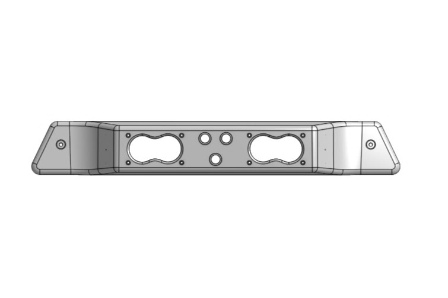

13th Gen F-150 Chase Light
This chase light is being developed as a direct third brake light replacement for the 13th generation Ford F-150 (2015–2020). It's designed to fit cleanly into the stock opening while offering a unique look and added utility with amber LED pods.
Status Update
The first 13th gen F-150 chase light prototype has been printed and test-fitted. Fitment was solid overall, and this initial test helped us confirm key dimensions and clearances against the factory trim.
Based on what we learned from that test, we’ve already updated the CAD model with the necessary adjustments and printed sections for another test fit. Once that’s checked and verified, we’ll move on to refining the final design details and sealing features.
Progress is moving forward — test fitting is underway, and each revision brings the model closer to a finalized, production-ready version.
Thanks for your patience and interest while development continues. More updates will be posted here after the next fit check.